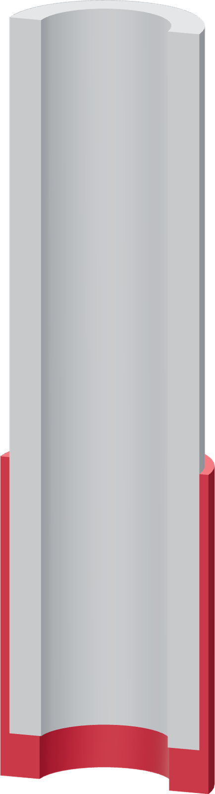

The tube arrives sleeved
Two separate operations: stretch the thimble onto the tube outside the donor, then insert that sleeved end into the metal port.

- Attach the accepted printed faucet lever to the bare Touch-Flo. Leave it down at rest, unpressed.
- Use the T handle to hold the tube while fitting the TPU thimble evenly around its end.
- Place the bare Touch-Flo in the nest and press the sleeved tube into its empty top port.
- Release the fixture. The faucet lever and sleeved tube remain attached when the donor enters the faucet shell.
The thimble goes onto the tube first
TPU slides against the metal far more easily than against LLDPE. Putting the thimble into the donor first can bunch it under the entering tube.